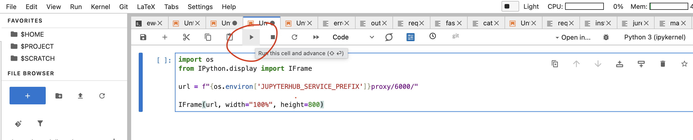
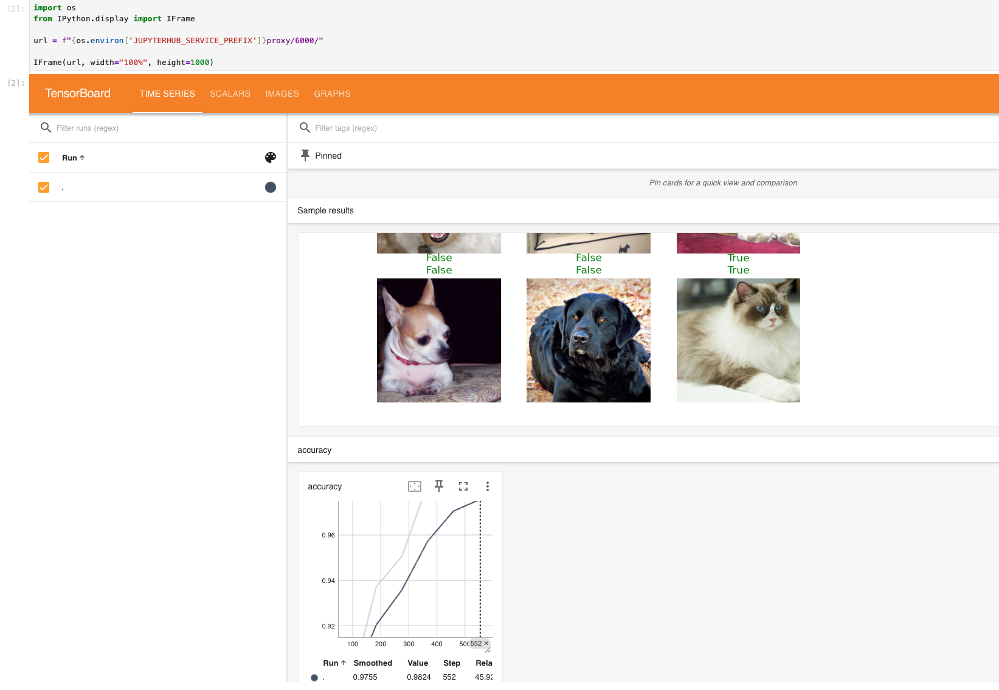

Running Deep Learning Models on HPC Systems
Sabrina Benassou, Javad Kasravi, Eske Ewert
September 21, 2026
Important Links
Links for the skill-up
Please open the slides on your device so you can copy and paste from the slides.

Goals for this course
- Access our machines in Jülich using Jupyter-JSC 👩💻
- Use the file system efficiently so that the supercomputer can access your data quickly 🏃
- Distribute your machine learning workload 💪

Team


Schedule for the skill-up (Part 1 & 2)
| Time | Title |
|---|---|
| Mon, 14:30 - 15:00 | Use Jupyter-JSC to connect to JURECA |
| Mon, 15:00 - 15:30 | How to run code on a compute node |
| Mon, 15:30 - 16:00 | Train a cat classifier |
| Tue, 10:15 - 11:00 | Single GPU training |
| Tue, 11:00 - 11:45 | Multiple GPU training using data parallel training |
Jülich Supercomputers

What is a supercomputer?
- Compute cluster: Many computers bound together locally
- Supercomputer: A lot of computers bound together locally 😒
- with a fancy network 🤯
Anatomy of a supercomputer
- Login nodes: Normal machines for compilation, data transfer, scripting, etc. No GPUs. A limited number of shared CPU cores.
- Compute nodes: Guess what?
- For compute! With GPUs! 🤩
- High-speed, ultra-low-latency network
- Shared networked file systems
JURECA DC Compute Nodes
- 192 accelerated nodes (with GPUs)
- 2x AMD EPYC Rome 7742 CPUs at 2.25 GHz (128 cores/node)
- 512 GiB memory
- Network: Mellanox HDR InfiniBand (FAST💨 and EXPENSIVE💸)
- 4x NVIDIA A100 with 40 GB 😻
- TL;DR: 24576 cores, 768 GPUs 💪
- Way deeper technical info at JURECA DC Overview
You don’t use the whole supercomputer
You submit jobs to a queue asking for resources

- Your job(s) enter the queue and wait for their turn
- When there are enough resources for that job, it runs
You don’t use the whole supercomputer
And get results back

Supercomputer Usage Model
- Using the supercomputer means submitting a job to a batch system.
- No node-sharing. The smallest allocation for jobs is one compute node (4 GPUs).
- Maximum runtime of a job: 24 h.
Recap
- Login nodes are for submitting jobs, downloading and moving files, compiling code, etc.
- NOT FOR TRAINING DEEP LEARNING MODELS!
Compute time
- Compute time allocation is based on compute projects. For every compute job, a compute project pays.
- Time is measured in core-hours. One hour of JURECA DC is 128 core-hours.
- Example: A job runs for 8 hours on 64 nodes of JURECA DC: 8 * 64 * 128 = 65536 core-h!
Connecting to JURECA DC
Recall that you should have completed the following preparations already:
- Go to the course project on JuDOOR: https://judoor.fz-juelich.de/login?show=/projects/join/training2638.
- Join the workshop’s compute project
training2638. - Sign the Usage Agreements (video).
Connecting to JURECA DC via Jupyter-JSC
Go to https://jupyter.jsc.fz-juelich.de/hub/login and choose Sign in with JSC account.

Connecting to JURECA DC via Jupyter-JSC
Log in with your JuDOOR account.

- Confirm that you allow the JSC Login service to use the information provided by the identity provider.
Create a new JupyterLab

Create a new JupyterLab
Please choose the following configuration. In particular, it is important that you choose the login node!

Click Open once it is ready.
Open a terminal on the login node

Open a terminal on the login node

Exercise: Create folders for the workshop
Use the terminal in Jupyter-JSC for the following steps:
- Create your course folder.
If you click on $PROJECT/dl-on-hpc-workshop on the left,
you should see a folder with your name.
Exercise: Create folders for the workshop
- Create a shortcut (link) to your course folder in your home folder.
- Enter your course folder.
Exercise: Create folders for the workshop
- Link certain cache directories to the course folder. They should not
be in
$HOME, as it has limited space.
mkdir ~/course/.cache
mkdir ~/course/.config
mkdir ~/course/.fastai
rm -rf $HOME/.cache
ln -s ~/course/.cache $HOME/
rm -rf $HOME/.config
ln -s ~/course/.config $HOME/
rm -rf $HOME/.fastai
ln -s ~/course/.fastai $HOME/If you click View > Show Hidden Files, you should see the cache folders you created.
Working with the supercomputer’s software
- We have literally thousands of software packages, compiled specifically for the supercomputer.
- Full list
- Detailed documentation
Example: PyTorch
- Copy and paste these lines:
# This command fails, as we do not have the correct PyTorch environment.
python -c "import torch; print(torch.__version__)"
# Then load the correct modules.
module load Stages/2025
module load GCC OpenMPI Python PyTorch
# And we run a small test: import PyTorch and ask for its version.
python -c "import torch; print(torch.__version__)"Demo code
- Create a new Python file in your course folder.
Open it in the editor. Paste this into the file:
How to run it on the login node
- Run it on the login node.
module load Stages/2025
module load GCC OpenMPI Python PyTorch torchvision
python matrix.pyBut that’s not what we want… 😒
So we send it to the queue!
HOW?🤔
Slurm 🤯

Simple Linux Utility for Resource Management
Slurm submission file
- A simple text file that describes what we want, how much of it we need, how long we need it, and what to do with the results
- Create a new file:
Slurm submission file example
Paste the following content into the file:
#!/bin/bash
#SBATCH --account=training2638 # Who pays?
#SBATCH --nodes=1 # How many compute nodes
#SBATCH --job-name=matrix-multiplication
#SBATCH --ntasks-per-node=1 # How many MPI processes per node
#SBATCH --cpus-per-task=1 # How many CPUs per MPI process
#SBATCH --output=output.%j # Where to write results
#SBATCH --error=error.%j
#SBATCH --time=00:01:00 # For how long can it run?
#SBATCH --partition=dc-gpu # Machine partition
#SBATCH --reservation=scicoco_day1 # Reservation (for today only)
module load Stages/2025
module load GCC OpenMPI PyTorch torchvision # Load the correct modules on the compute node(s)
srun python matrix.py # srun tells the supercomputer how to run itSubmitting a job:
sbatch
- Submit the Slurm job.
Are we there yet?

Are we there yet? 🐴
- Check the status of the job using the following command:
watch squeue --me
JOBID PARTITION NAME USER ST TIME NODES NODELIST(REASON)
412169 gpus matrix-m ewert4 CF 0:02 1 jsfc013Close it with Ctrl+C.
ST is the status:
- PD (pending)
- CF (configuring)
- R (running)
- CG (completing)
The job is wrong and needs to be cancelled
Check logs
- By now, you should have output and error log files in your directory. Check them! For example:
Here, 412169 is the job ID. You can open the files in the editor.
Let’s train a 🐈 classifier!
This is a minimal demo to show some quirks of the supercomputer.
We will train:
- ResNet-34, a convolutional neural network pretrained on image data, to classify images as cats or dogs
- Training data: the Oxford-IIIT Pet dataset, containing about 7,400 images of cats and dogs
- using the fastai library (high level training setup)
Some preparations: Set up a virtual environment using uv
- Load the modules we want to use:
- Create a new virtual environment in your course folder
- We need to install some additional packages. Create a file
touch requirements.txtwith the following content
accelerate==1.1.1
datasets==3.6.0
fastai==2.8.12
fsspec==2025.2.0
ipykernel==7.3.0
lightning==2.6.6
matplotlib==3.9.2
numba==0.60.0
numpy==1.26.4
pandas==2.2.2
pyarrow==18.1.0
scipy==1.13.1
scikit-learn==1.5.2
sentencepiece==0.2.0
tensorboard==2.21.0
torch==2.8
torchrun-jsc==0.0.19
transformers==4.46.3
wandb==0.30.0- Install these by
- Finally, activate the virtual environment:
We will always use this virtual environment from now on!
The cat classifier
- Create a file in your course folder:
touch cats.pywith the following content:
from fastai.vision.all import *
from fastai.callback.tensorboard import *
#
print("Downloading dataset...")
path = untar_data(URLs.PETS)/'images'
print("Finished downloading dataset")
#
def is_cat(x): return x[0].isupper()
# Create the data loaders and resize the images
dls = ImageDataLoaders.from_name_func(
path, get_image_files(path), valid_pct=0.2, seed=42,
label_func=is_cat, item_tfms=Resize(224))
print("On the login node, this will download ResNet-34")
learn = vision_learner(dls, resnet34, metrics=accuracy)
cbs=[SaveModelCallback(), TensorBoardCallback('runs', trace_model=True)]
# Trains the model for 6 epochs with this dataset
learn.unfreeze()
learn.fit_one_cycle(6, cbs=cbs)Submission file for the classifier
- Create a Slurm file.
#!/bin/bash
#SBATCH --account=training2638
#SBATCH --mail-user=MYUSER@fz-juelich.de
#SBATCH --mail-type=ALL
#SBATCH --nodes=1
#SBATCH --job-name=cat-classifier
#SBATCH --ntasks-per-node=1
#SBATCH --cpus-per-task=128
#SBATCH --output=output.%j
#SBATCH --error=error.%j
#SBATCH --time=00:20:00
#SBATCH --partition=dc-gpu
#SBATCH --reservation=scicoco_day1 # For today only
module load Stages/2025
module load GCC OpenMPI PyTorch torchvision # Load the correct modules on the compute node(s)
source ~/course/.venv/bin/activate # Activate the virtual environment
srun python cats.pySubmit it
- Run the cat classifier.
Submission time
- Check the error and output logs and the queue.
Check the error.${JOBID} file
You will get an error. Why?
🤔…
What is it doing?
This downloads the dataset:
This line downloads the pre-trained weights:
Compute nodes have no internet connection!
- But the login nodes do!
- So we download our dataset beforehand…
- On the login nodes!
On the login node
- Comment out the line that performs the AI training:
Run the code on the login node!
Run the downloader on the login node
$ source .venv/bin/activate
$ python cats.py
Downloading dataset...
|████████-------------------------------| 23.50% [190750720/811706944 00:08<00:26]
Downloading: "https://download.pytorch.org/models/resnet34-b627a593.pth" to /p/project/ccstao/cstao05/.cache/torch/hub/checkpoints/resnet34-b627a593.pth
100%|█████████████████████████████████████| 83.3M/83.3M [00:00<00:00, 266MB/s]Run it again on the compute nodes!
- Uncomment the line that performs the training:
Submit the job again!
7. Check output files
The activation script must be sourced, otherwise the virtual environment will not work.
Setting vars
Downloading dataset...
Finished downloading dataset
epoch train_loss valid_loss error_rate time
Epoch 1/1 : |-----------------------------------| 0.00% [0/92 00:00<?]
Epoch 1/1 : |-----------------------------------| 2.17% [2/92 00:14<10:35 1.7452]
Epoch 1/1 : |█----------------------------------| 3.26% [3/92 00:14<07:01 1.6413]
Epoch 1/1 : |██---------------------------------| 5.43% [5/92 00:15<04:36 1.6057]
...
....
Epoch 1/1 :
epoch train_loss valid_loss error_rate time
0 0.049855 0.021369 0.007442 00:42 - 🎉
- 🥳
Tools for results analysis
We already ran the code and have results. To analyze them, there is a useful tool called TensorBoard. We already have the code for it in our example!
TensorBoard
In the terminal enter:
Then open a jupyter notebook (File -> New Notebook), select Python 3 (ipykernel) and execute:

TensorBoard

Day 1 recap
By now, I expect you have managed to:
- Stay awake for the most part of this afternoon 😴
- Connect to JURECA using Jupyter-JSC
- Edit files on JURECA
- Submit jobs and read results
- Be ready to write great code!
Tomorrow: More about training and parallelization.
Thank you for your attention! Any questions?